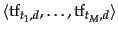
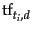
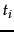
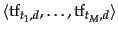
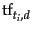
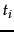
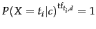
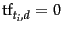
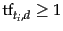

Next:
Feature selection
Up:
Properties of Naive Bayes
Previous:
Properties of Naive Bayes
Contents
Index
A variant of the multinomial model
An alternative formalization of the
represents each document
 as an
as an
 -dimensional vector of counts
 where
 is the term frequency of
 in
.
-dimensional vector of counts
 where
 is the term frequency of
 in
.
 is then computed as follows (cf. Equation
99, page
12.2.1 );
is then computed as follows (cf. Equation
99, page
12.2.1 );
Note that we have omitted the multinomial factor. See Equation
99 (page
99 ).
Equation 129 is equivalent to the sequence model in Equation 113 as
 for terms that do not occur in (
) and a term that occurs
 times will contribute
factors both in Equation 113 and in Equation 129.
Exercises.
- Which of the documents in Table 13.5 have identical and different bag of words representations for (i) the Bernoulli model (ii) the multinomial model? If there are differences, describe them.
- The rationale for the positional independence assumption is that there is no useful information in the fact that a term occurs in position
 of a document. Find exceptions. Consider formulaic documents with a fixed document structure.
of a document. Find exceptions. Consider formulaic documents with a fixed document structure.
- Table 13.3 gives Bernoulli and multinomial estimates for the word the. Explain the difference.
Next:
Feature selection
Up:
Properties of Naive Bayes
Previous:
Properties of Naive Bayes
Contents
Index
© 2008 Cambridge University Press
This is an automatically generated page. In case of formatting errors you may want to look at the PDF edition of the book.
2009-04-07